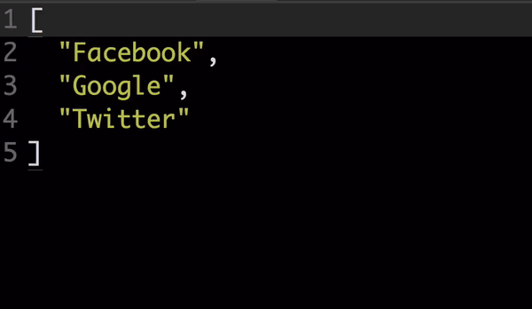
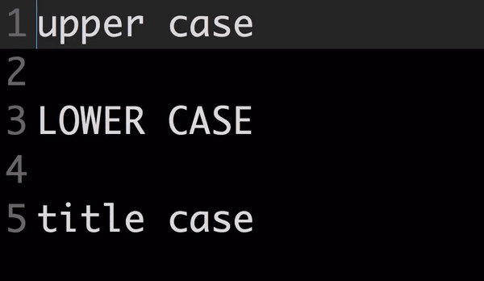

多重选取
通常每个文字编辑器都会有个搜寻（find）、替换（replace）的功能，用来一次更换档案里重复的文字，包括 Sublime Text 2 也有，但是在某些情况多重选取功能可以更有效率地修改文字。
使用快捷键 Command + D 选取插字符号所在位置的文字，重复使用这个快捷键，可以快速地依序重复选取档案里相同的文字，如果想要跳过目前选取的文字，可以使用 Command + K + Command + D，复原选取动作则用快捷键 Command + U。
也可以用快捷键 Control + Shift + 上下方向键，进行多重选取的操作。
合并多行

假设有一个 array 在档案里这样写：
[
"Facebook",
"Google",
"Twitter"
]
想要把它合并到同一行，除了可以透过多重选取功能快速地做到，其实还可以用合并多行（join lines）这个功能，会更方便。先将这个阵列整个选取起来，然后按下快捷键 Command + j，就会变成：
["Facebook", "Google", "Twitter"]
转换大小写

Commandk + Commandu：转换文字为大写；
Commandk + Commandl：转换文字为小写；
将单字的字首转成大写，预设没有快捷键，你可以从指令面板呼叫它，或是自己设定快捷键，例如加上这一行，可以用 Commandk + Commandt 呼叫它：
json [ { "keys": ["super+k", "super+t"], "command": "title_case" } ]
尺规
尺规会显示一条参考线，用来限制单行显示的字元数量，有的人认为这样有助于程式码的阅读。
你可以从选单栏 View >> Ruler 去选择要断行的字数，这样编辑器上就会显示一条参考线。
也可以从偏好设定里加上自定的数值，或是显示多条参考线，例如：
[
"rulers": [90, 110, 130]
]
注解
可以选择多行，或是插字符号所在位置，然后用快捷键 Command + / 将选择的栏位注解起来。
如果你的使用程式语言有所谓的区块注解（block comment），且语法定义里也有定义，可以用快捷键 Command + alt + / 来使用区块注解。